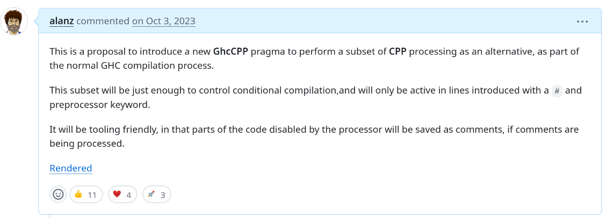

Alan Zimmerman
Haskell Implementors' Workshop,
ZuriHac, 2025-06-06

I worked from an online version at https://timsong-cpp.github.io/cppwp/n4140/
{-# LANGUAGE CPP #-} #if __GLASGOW_HASKELL__ >= VERSION_WITH_GHCCPP {-# LANGUAGE GHC_CPP #-} #endif
NonDecreasingIndentJavaScriptFFIThis presentation: https://alanz.github.io/h1w2025/
Questions?
Maybe
But useful for generated code, a definite use-case HOWEVER, there is a haskell-specific syntax for that already
Works with all expansions of CPP options for a file
Need to check what it does https://github.com/tweag/ormolu/blob/master/DESIGN.md#cpp
If CPP is replaced with some language extension or mechanism to do conditional compilation, all tools will benefit from it.
Every tool is doing its own best to cope with it
Barest subset of evaluation